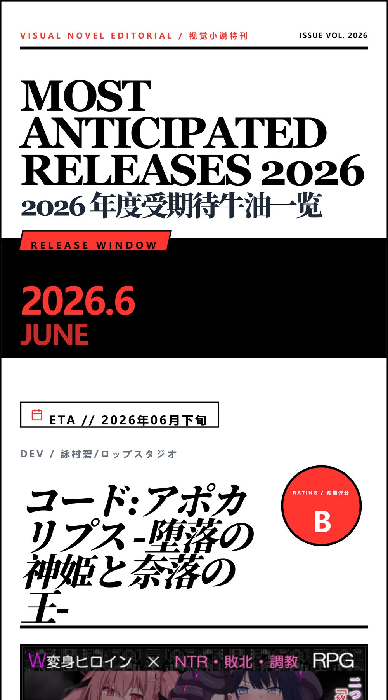

短篇 RPG / 人妻题材
2026-01-10
妻の一番綺麗な姿
短篇人妻线 / おてつ堂
作为 2026 年第一部测评样张，这作最适合拿来立博客标准：体量小、信息密、雷点明确，优缺点都能一眼拆出来。
 NTRGAME REVIEW
ReviewFork / 牛油测评档案
NTRGAME REVIEW
ReviewFork / 牛油测评档案
短得离谱，但它至少知道自己要端哪盘菜。五十多张图压进一个小体量里，粗糙归粗糙，完成度反而比很多大饼社团像样。
作为 2026 年第一部测评样张，这作最适合拿来立博客标准：体量小、信息密、雷点明确，优缺点都能一眼拆出来。
按 NTRGAME REVIEW 的结构整理：规格表、人物目录、雷达评分和长评口吻都从同一个数据文件生成，后面很好改。
作为 2026 年第一部测评样张，这作最适合拿来立博客标准：体量小、信息密、雷点明确，优缺点都能一眼拆出来。
以你给的测评图为准，网络未稳定核验

配置很会抓人，和服、女主、同社团老味道全都在；但玩下来就是一套公式跑完，能吃，也确实像工业罐头。
以你给的测评图为准，网络未稳定核验

场景气质有，题材也能让人进门；但剧情和系统像没拧紧的机器，越往后越暴露短板。
以你给的测评图为准，网络未稳定核验

标题和包装都很会摆，战斗幻想味很足。先给 B，不是因为稳，而是这种大标题最容易看上去很大、落地很小。
前瞻图的卖点很直，但风险也很直。先放低期待，等实际文本和系统能不能撑住。
人设和队列感不错，比较像能做出目录页的作品。问题还是老问题，别只有设定会吹。
先按观望处理。图面信息不差，但目前看不出它能不能有核心记忆点。
这类一眼高期待，主要看它到底是有压迫感，还是只会把氛围词堆满。先给 S-，等实物审判。
前瞻图里最像能冲的一个。RPG、ANOTHER、角色量都摆出来了，成败就看系统别又做成机械劳动。
标题已经把牌摊桌上了。传播感强，但也最容易只剩标签。先 B，等看文本有没有脑子。
标题气质很怪，这反而值得盯一下。怪题材最怕做成噱头，也最可能突然给点新味道。
按年份新建榜单，上传封面图，把条目拖进不同分层。当前版本会保存到你的浏览器，并可导出 JSON 备份。
互动数据：本地预览模式。配置 Firebase 后，访客会看到同一份点赞和投票结果。
用于决定下一篇长评方向。Firebase 配好后，所有访客会看到同一份投票结果。
这不是装饰投票，后续改版可以直接按这个来排优先级。
你的原型文件在 reference/，测评长图和前瞻长图在 assets/images/user-reviews/。
正式站点不会只贴长图，而是把结构拆成可维护的网页模块。
别人能看到的图片必须进仓库。首页使用轻量展示图，原始长图保留为档案图，避免页面越做越卡。
点赞和投票的云端同步配置写在 config/firebase-config.js。
详细步骤在 FIREBASE_SETUP.md。